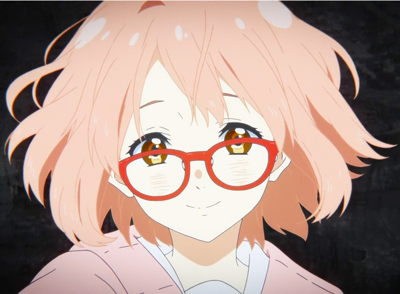

Anime

Anime
Es un término que engloba a la animación tradicional o por computadora de procedencia japonesa
El anime es uno de mis hobbits favoritos desde hace 5 años debido a las horas de entretenimientos que este ofrece, entre los primeros animes que vi fue el anime de kyokai no kanata, con ese anime me enganche a lo que es el anime, y mi personaje favorito es mirai kurillama que es el que se encuentra a lado izquierdo de la pagina. El anime fue mi manera de gastar mi tiempo libre, pero en los ultimos años no he visto una gran cantidad de anime. mis animes favoritos son:
- Kyokai no kanata
- Re:zero
- Shigatsu wa kimi no uso
- Gintama
Las principales paginas en las que veo anime son en